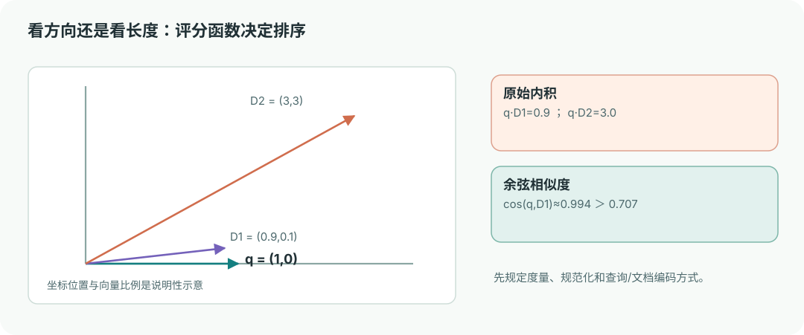
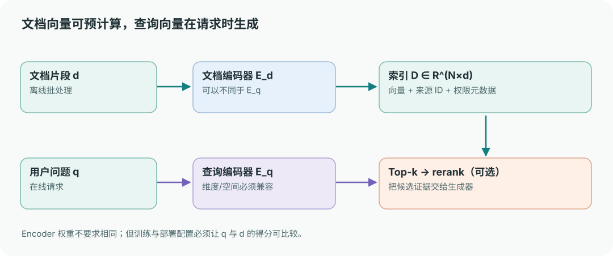
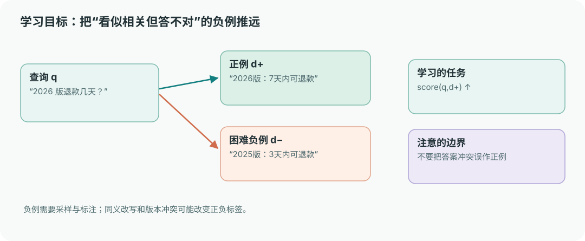
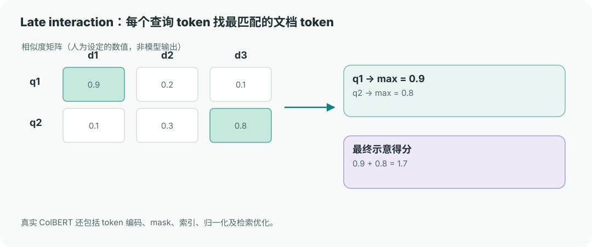
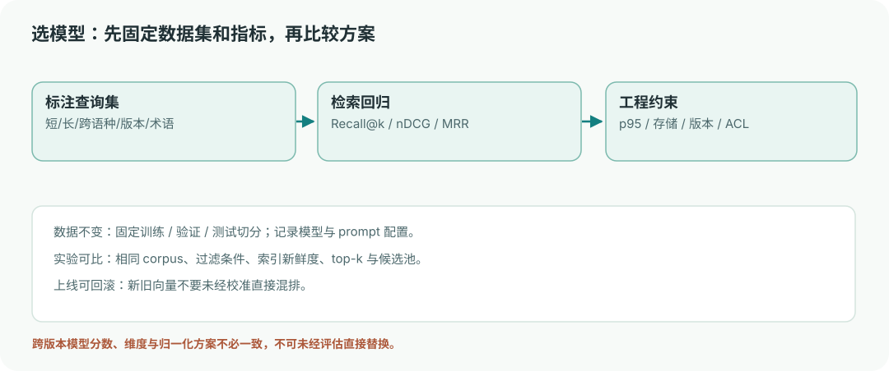

GEOMETRY → TRAINING → RETRIEVAL
向量嵌入：
从几何到检索表示学习
向量接近究竟意味着什么？沿着点积与余弦、双编码器、正负样本训练、ColBERT MaxSim 的机制理解检索表示，并建立不被模型排行榜误导的评测方法。
MECHANISM / PROBLEM
为什么包含关键词却找不到答案？
某份规范写着“在完成支付后七个自然日内可申请退款”，用户提问“付款后几天可退？”关键词未必完全相同，但两个句子表达的是相近需求。稀疏检索可以依靠关键词与分词匹配；稠密检索则希望把“提问”和“能回答提问的证据”映射到可比较的向量空间，从而在词面不同的情况下仍能召回。
这不是语言模型天然具备的数学保证。一个 embedding 是由特定编码器、训练目标、输入模板和 token 截断策略定义的表示。不同任务、语言、领域和模型可能让“相似”的含义发生变化：例如两个版本条款往往在语义上很近，但期限不同，不能视为同一条答案。
MECHANISM / GEOMETRY
点积、余弦和向量长度
设查询向量 q 与文档向量 d 都在非零的 d 维实向量空间。点积 q·d 受长度和夹角共同影响；余弦相似度用向量范数除去长度效应：
当查询和文档均 L2 归一化时，它们的点积才等于余弦相似度。未归一化时，长向量可能因为幅值较大而获得更高的点积分数；具体是否该归一化，应遵守训练和索引的模型约定。

零向量的余弦没有定义；跨不同 embedding 模型的“0.8 分”也不一定可以直接比较。分数不是校准概率，不能据此宣称“80% 可信”。
MECHANISM / ENCODERS
双编码器不是把句子丢进一个函数
在典型双编码器（Bi-Encoder / Dual-Encoder）中，文档编码器 Ed 离线处理整个文档集合，查询编码器 Eq 在线处理用户问题。对于 N 个向量维度为 D 的文档，索引矩阵形状可写作 N×D；单次查询向量为 D，得分计算可近似看作与 N 个候选的向量相似度计算，实际通常使用 ANN 索引降低大集合搜索开销。

DPR 的研究使用专门的 query encoder 与 passage encoder，这说明“离线与在线必须是同一个对象、同一权重”是过强的说法。相反，真正重要的是训练时两端如何配对，以及部署时是否保持这些约定。
双编码器与交叉编码器的核心区别
双编码器可离线缓存文档向量，适合大规模第一阶段召回。交叉编码器把 [query, document] 作为一对输入，在注意力层中发生更细粒度的交互，常用于小候选池精排；它通常不能像独立文档向量那样对任意查询直接复用同一组预计算分数。精度、计算代价和速度要在目标任务中实测，不能认为任意 Cross-Encoder 都始终更准确。
MECHANISM / LOSS
用正例、困难负例学习表示空间
有语义并不等于会检索。训练数据通常需要把“问题 q”“可以支持回答的正例 d+”“不相关或会误导的负例 d−”配对。一个对比学习目标可以让正例的分数相对负例更高。

对一个正例与若干负例，常见的 InfoNCE 形式之一为：
其中 s 是训练所使用的相似度得分，τ＞0 为温度，𝒩 为负例集合。具体训练还可能涉及批内负样本、蒸馏和不同的对比损失形式。困难负例不应因为“看起来像答案”就自动标为负例：必须先核查题意、时间与权限，否则会把正确证据训练得越来越远。
MECHANISM / MODEL
模型功能与输入约定需要分开比较
模型选型时，不该把不同年份的 MTEB 排行榜分数拼成一张“当前准确率表”。语言、任务、训练污染、长度与检索评估集合不一致时，数字不可直接比较。更有意义的做法是按业务所需表示类型与部署条件分类：
| 模型 / 方法族 | 表示或特点（来源范围内） | 必须确认的使用约束 |
|---|---|---|
| Sentence-BERT 系列 | 单向量句子表示，便于批量语义检索 | 训练目标、池化方式、归一化与多语言能力 |
| DPR 风格双编码器 | 查询与段落分别编码，常用内积检索 | 两侧权重/维度兼容、输入长度与领域 |
| BGE-M3 | 论文研究稠密、稀疏及多向量多功能检索 | 不同输出模式与实现 API，不能假设每种包装器相同 |
| Qwen3 Embedding | 公开研究中的多语言 embedding 与 reranker 系列 | 具体 checkpoint、输入指令与上下文限制 |
| OpenAI embedding-3 系列 | API 单向量，支持部分维度配置 | 默认 small 1536、large 3072；缩短维度要评测 |
| ColBERT 风格 | token 级多向量与 Late Interaction | 索引空间、存储、MaxSim 与压缩开销 |
这些是模型家族的设计区别，不是性能排名。比如 BGE-M3 的多功能支持来自该模型论文，但具体 SDK 中能否直接调用 prompt_name="passage" 或某个固定英文前缀，必须查看你实际安装的模型配置；不能把别的 BGE 版本或 E5 的前缀习惯强行套用。
对 API 类模型，还要确认数据出域、输入 token 上限、更新策略和价格。选择商业 API 还是自部署模型，应在同一标注集上先做离线复现，再比较成本和性能。
MECHANISM / LATE
多向量检索 ColBERT 的 MaxSim
单向量把一个片段压缩成固定 D 维表示，适合快速 ANN；但当提问涉及多个实体、不同条件和长文本时，一次池化可能损失部分 token 级匹配细节。ColBERT 采用 Late Interaction：为查询和文档的 token 保留向量，再进行逐 token 相似度聚合。

忽略 padding 与 mask 的简化形式可以写为：
其中 qi 和 dj 是已编码的 token 向量，二者维度相同。多向量检索通常增加索引和评分复杂度，实际 ColBERT 的训练、投影、mask 与高效检索还包含重要细节，不可把上式当作完整实现。
MECHANISM / EXPERIMENT
用二维向量做可重复的计算
先在手工指定的二维向量上验证排序函数，再接入实际 embedding 模型，能避免将“分数变化”错误归因于训练效果。仓库的 examples/embedding_lab.py 提供点积、余弦、稳定 InfoNCE 和玩具 MaxSim 实现。
from examples.embedding_lab import (
DOCUMENTS, dot, cosine, rank,
infonce_loss, maxsim
)
q = (1.0, 0.0)
assert [name for name, _ in rank(q, DOCUMENTS)] == ["D1", "D2"]
assert [name for name, _ in rank(q, DOCUMENTS, "dot")] == ["D2", "D1"]
assert round(cosine(q, DOCUMENTS[0][1]), 3) == 0.994
print("cosine best:", rank(q, DOCUMENTS)[0][0])
print("dot best:", rank(q, DOCUMENTS, "dot")[0][0])运行 python3 -m examples.embedding_lab，Python 标准库即可。这个演示没有使用自然语言编码器，所以不能据此评估中文检索质量、预期收益或领域泛化。
真正评估一个模型时，应该固定查询-相关片段标注、文档版本、输入长度以及编码调用方式；更换 embedding 的同时更换 chunking 或重排器，会让效果归因变得困难。
MECHANISM / MIGRATION
从离线评测到索引版本迁移
embedding 模型更换不只是替换一行代码。新模型可能改变维度、向量归一化约定、tokenizer、查询指令格式、稀疏/稠密输出类型和分数分布；如果旧索引与新查询编码器不兼容，系统可能仍返回结果，但相关性严重下降。

一个保守迁移路径是：旧版本继续服务 → 新模型独立建立影子索引 → 使用固定 gold set 评估 → 观察向量空间指标与线上资源 → 按灰度流量切换 → 可快速回滚。跨新旧索引直接比较未校准的相似度分数一般没有可靠含义。
| 验收维度 | 建议检查 | 为什么重要 |
|---|---|---|
| 检索质量 | Recall@k、nDCG、MRR、困难负例错误率 | 真正测的是查找答案证据，不是 embedding 好看 |
| 版本与领域 | 多语言、专业术语、时间/版本冲突 | 相似旧版文档是典型高风险负例 |
| 数值约定 | 维度、L2 归一化、分数范围、tokenizer | 避免不兼容查询编码器或混索引 |
| 工程成本 | 向量存储、索引构建、p95 延迟、吞吐量 | 模型精度收益必须和预算一起看 |
| 权限与引用 | 检索前授权、来源 ID、删除传播 | 高相似度不能让模型越权返回 |
| 可复现性 | 模型校验和、prompt 模板、种子、索引版本 | 回归失败才能定位到特定组件 |
MECHANISM / SUMMARY
表示空间本身也有边界
embedding 是在特定目标下学习得到的表示与评分系统，并非“每个语义都存在一个通用的欧氏坐标”。双编码器解决大规模候选召回，多向量模型保留更细粒度的 token 匹配，交叉编码器通常承担后续精排；三者可以互补，但不是机械可替代。
理解 向量维度、分数定义、编码器角色、训练负例与索引版本 后，才适合进入 ANN、HNSW、IVF 和向量数据库的持久化与性能设计。
来源与延伸阅读
- Reimers & Gurevych, Sentence-BERT (EMNLP 2019) — 双塔句向量与余弦相似度
- Karpukhin et al., DPR (EMNLP 2020) — 查询/段落双编码器与稠密检索训练
- Khattab & Zaharia, ColBERT (SIGIR 2020) — token 级延迟交互与 MaxSim
- Chen et al., BGE-M3 (2024) — 多语言、多功能、多粒度检索表示
- Qwen Team, Qwen3 Embedding (2025) — Embedding/Reranking 系列的公开技术报告
- OpenAI — Vector embeddings 官方指南 — text-embedding-3-small/large 默认维度及可选降维参数